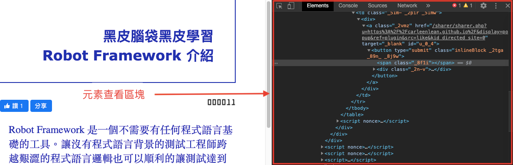
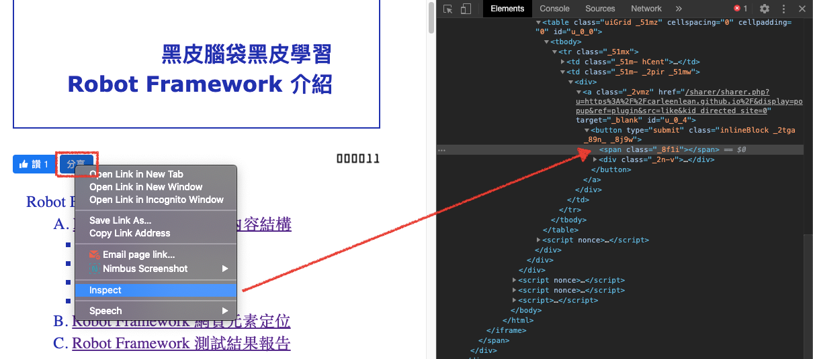
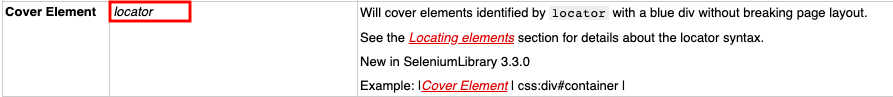

- Robot Framework 概念：
Robot Framework 網頁元素定位（Locators）
Robot Framework 網頁元素定位: 一個網頁是由很多 HTML 元素組成的。什麼是元素呢？ 元素可以是網頁的一個標題，圖像，連結，段落，影片，其他更多。。。你可以想像成我們組裝一台機車，機車是要很多的 “零件” 組成一台機車。機車的零件包括： 龍頭，輪胎，前後燈，其他更多。。。元素可以想像成零件。
在 Robot Framework 元素定位是非常重要的。如果不了解如何定位網頁上元素的位置則無法成功執行想要的結果並且完成測試。兩種可能的結果，找不到元素，執行程式的時候一直失敗。另一個，定義到頁面其他元素的名字。例如：我要執行登出按鈕，可是一直按到登入按鈕。
根據 官方資料 元素定義為 “locator”。常用的定位包含以下類型：
- id id="robot"
- name name="robot"
- class class="robot"
- xpath xpath="//*[@id="u_0_4"]/button/span"
- css css="robot"
- link link="robot"
- partial link partial link="framework"
** 定位一個元素的時候只需要用上述其中一個方法定位。不用全部都使用喔！而我本身比較常用的是 xpath 與 css。畢竟這兩種定位方式直接使用右鍵複製就可以定位到了。因為網頁上面不一定會有 id 或是 class。而普遍網頁會有 xpath 與 css。
如何使用 Chrome 瀏覽器抓取元素偵測功能呢？ 首先要先打開 Chrome 的查看（Inspect）模式:
- 第一種方法：滑鼠移動到想要查看的元素上面，並且按右鍵，選擇查看（Inspect）選項。
- 第二種方法：滑鼠移動到 Chrome 右上角有一個 Chrome 設定, 選更多工具（More Tools）> 開發者模式（Developer Tools）。
- 開啟成功之後瀏覽器在右手邊就會多開一個查看元素視窗區塊。 
- 成功開啟查看元素視窗之後，如何查看指定元素的定位呢？
- 在元素上面按右鍵選擇查看，元素視窗區塊即刻導向到元素位置。 
- 接著在元素檢視視窗按右鍵選擇複製 (Copy) > Copy XPath
- 複製格式是： //*[@id="u_0_4"]/button/span
右鍵選單可複製 xpath 與 css
如果你要擷取 CSS 也是用一樣的方法，不同的是要複製的是 "Copy Selector"。
- name，id，class 與 link 他們擷取定位的方式是直接在元素裡面複製他們的名字。
- 使用右鍵選查看 (inspect) 開啟查看元素視窗之後，在元素地方點選元素 id 名字然後複製。所以這個 id 名字就是 “introduction”。寫進 locator 格式就是: id="introduction"。
- 如果要定位的元素是 name 這個 name 的名字就是 “introname”。寫進 locator 格式就是: name="introname"。
在官方網站的關鍵字敘述，如果檔案寫到輸入 “Locator” 則會需要選擇上述其中一個定位類型來定位元素位置。
輸入的格式是【TAB】先內縮，然後輸入關鍵字 “Cover Element ”, 再按一次【TAB】接著輸入擷取到的元素定位名稱 “xpath="//*[@id="u_0_4"]/button/span"”。

在 Chrome 有一個外掛叫 ChroPath。有興趣的朋友也可以使用看看，只需要按複製就可以把所想要元素的 xpath 或 css 顯示出來使用。